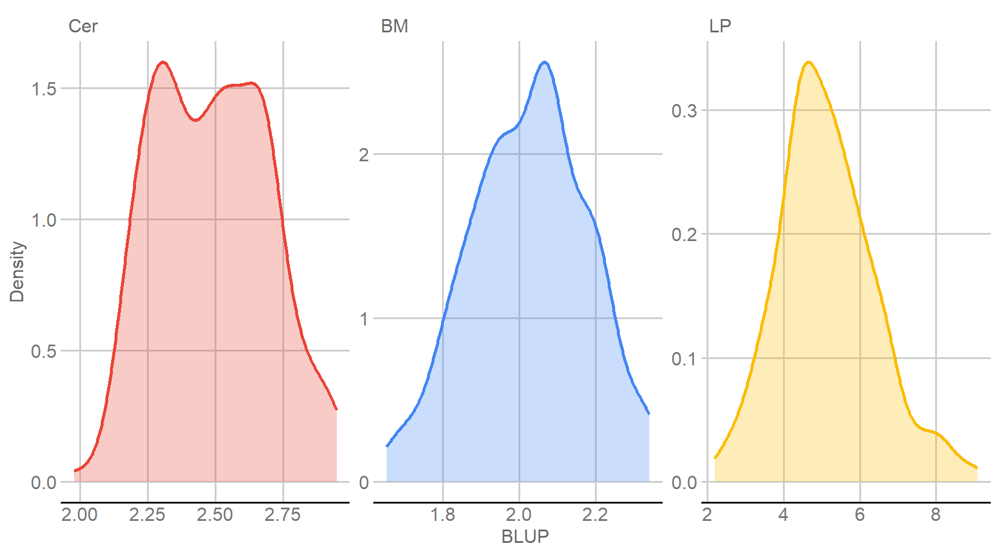

Last updated: 2026-11-24
Checks: 7 0
Knit directory:
Genomic-Prediction-using-Regularized-Artificial-Neural-Networks/
This reproducible R Markdown analysis was created with workflowr (version 1.7.2). The Checks tab describes the reproducibility checks that were applied when the results were created. The Past versions tab lists the development history.
Great! Since the R Markdown file has been committed to the Git repository, you know the exact version of the code that produced these results.
Great job! The global environment was empty. Objects defined in the global environment can affect the analysis in your R Markdown file in unknown ways. For reproduciblity it’s best to always run the code in an empty environment.
The command set.seed(20260821) was run prior to running
the code in the R Markdown file. Setting a seed ensures that any results
that rely on randomness, e.g. subsampling or permutations, are
reproducible.
Great job! Recording the operating system, R version, and package versions is critical for reproducibility.
Nice! There were no cached chunks for this analysis, so you can be confident that you successfully produced the results during this run.
Great job! Using relative paths to the files within your workflowr project makes it easier to run your code on other machines.
Great! You are using Git for version control. Tracking code development and connecting the code version to the results is critical for reproducibility.
The results in this page were generated with repository version 2525bfc. See the Past versions tab to see a history of the changes made to the R Markdown and HTML files.
Note that you need to be careful to ensure that all relevant files for
the analysis have been committed to Git prior to generating the results
(you can use wflow_publish or
wflow_git_commit). workflowr only checks the R Markdown
file, but you know if there are other scripts or data files that it
depends on. Below is the status of the Git repository when the results
were generated:
Ignored files:
Ignored: .Rhistory
Ignored: .Rproj.user/
Ignored: .github/
Ignored: CONTRIBUTING.md
Ignored: data/dados_reais/geno_real.rds
Ignored: output/real/ann/figures/
Ignored: output/real/audit/figures/
Ignored: output/real/comparison/figures/
Ignored: output/real/gblup/figures/
Ignored: output/real/phenotype/figures/
Ignored: output/simulated/ann/figures/
Ignored: output/simulated/audit/figures/
Ignored: output/simulated/comparison/figures/
Ignored: output/simulated/gblup/figures/
Ignored: output/simulated/validation/figures/
Ignored: renv/library/
Ignored: renv/staging/
Note that any generated files, e.g. HTML, png, CSS, etc., are not included in this status report because it is ok for generated content to have uncommitted changes.
These are the previous versions of the repository in which changes were
made to the R Markdown (analysis/real_data_phenotype.Rmd)
and HTML (docs/real_data_phenotype.html) files. If you’ve
configured a remote Git repository (see ?wflow_git_remote),
click on the hyperlinks in the table below to view the files as they
were in that past version.
| File | Version | Author | Date | Message |
|---|---|---|---|---|
| Rmd | 2525bfc | Weverton Gomes da Costa | 2026-11-24 | docs(r01): document phenotypic exports without running or displaying writes |
| Rmd | 0b32758 | Weverton Gomes da Costa | 2026-11-24 | docs(r01): explain target identity and saved plant BLUP construction |
| Rmd | f948d1e | Weverton Gomes da Costa | 2026-11-24 | docs(r01): clarify saved fixed-year effects and distinction from plant BLUPs |
| Rmd | 84de489 | Weverton Gomes da Costa | 2026-11-24 | docs(r01): explain saved variance components and model-derived ratios |
| Rmd | 7a2ea6f | Weverton Gomes da Costa | 2026-11-24 | docs(r01): clarify fitted-result provenance without repetition |
| Rmd | 1dcb51e | Weverton Gomes da Costa | 2026-11-24 | docs(r01): map five fitting stages to unchanged mixed-model computations |
| Rmd | c151ae1 | Weverton Gomes da Costa | 2026-11-24 | docs(r01): clarify saved-result provenance in model explanation |
| Rmd | 03d6e3b | Weverton Gomes da Costa | 2026-11-24 | docs(r01): align model preparation and incidence matrix explanations |
| Rmd | 640a772 | Weverton Gomes da Costa | 2026-11-24 | docs(r01): inspect original phenotype records and document observed variable coding |
| Rmd | 76b700a | Weverton Gomes da Costa | 2026-11-24 | docs(r01): introduce trait names at first phenotypic summary |
| Rmd | 1c2019b | Weverton Gomes da Costa | 2026-11-24 | docs(r01): keep setup minimal and show data paths at use sites |
| Rmd | 0e5f081 | Weverton Gomes da Costa | 2026-11-24 | docs(r01): render native Markdown tables at full width |
| Rmd | 9a1d4ad | Weverton Gomes da Costa | 2026-11-24 | docs(r01): use native Pandoc captions for Markdown reference tables |
| Rmd | 5b15d02 | Weverton Gomes da Costa | 2026-11-24 | docs(r01): convert fixed reference tables to Markdown |
| Rmd | 306c9d3 | Weverton Gomes da Costa | 2026-11-24 | docs(r01): use full-width Bootstrap tables without custom CSS |
| Rmd | 2aac38c | Weverton Gomes da Costa | 2026-11-23 | docs(r01): isolate fitting tolerances from settings presentation |
| Rmd | bc7f5aa | Weverton Gomes da Costa | 2026-11-23 | docs(r01): position fitting controls beside model code and fix table widths |
| html | 8b5ce81 | WevertonGomesCosta | 2026-11-23 | docs(r01): publish refactored phenotype tutorial HTML |
| Rmd | bcfdb68 | Weverton Gomes da Costa | 2026-11-23 | docs(r01): add trait-level tutorial headings and clean whitespace |
| Rmd | ff6ca1e | Weverton Gomes da Costa | 2026-11-23 | docs(r01): separate tutorial steps and retain saved scientific results |
| Rmd | cb4f987 | Weverton Gomes da Costa | 2026-11-23 | docs(r01): replace hidden table helper and remove administrative assertions |
| html | 3d4a073 | WevertonGomesCosta | 2026-11-23 | docs(r01): publish validated phenotype tutorial HTML |
| Rmd | 4d20602 | Weverton Gomes da Costa | 2026-11-23 | docs(r01): avoid duplicate code listings for saved-result tables |
| Rmd | 8a54b09 | Weverton Gomes da Costa | 2026-11-23 | docs(r01): render saved phenotypic results without refitting models |
| Rmd | 9eff9cc | Weverton Gomes da Costa | 2026-11-23 | docs(r01): remove editorial process language and clarify R02 BLUP handoff |
| Rmd | b7b333f | Weverton Gomes da Costa | 2026-11-23 | docs(r01): clarify phenotypic tutorial narrative without changing analysis |
| html | d8cf4a4 | WevertonGomesCosta | 2026-11-17 | docs(real): publish validated R01 tables and BLUP figure |
| Rmd | f89b46b | WevertonGomesCosta | 2026-11-17 | fix(real): finalize R01 phenotype summaries and scientific presentation |
| html | 574df97 | WevertonGomesCosta | 2026-11-17 | docs: rebuild real-data scientific pages for R01-R03 |
| Rmd | 09245fd | Weverton Gomes da Costa | 2026-11-17 | docs(real): consolidate phenotypic definitions, variance interpretation and CV contract |
| Rmd | 15bfb23 | GitHub | 2026-11-16 | docs: standardize scientific documentation and terminology (#19) |
| html | 15bfb23 | GitHub | 2026-11-16 | docs: standardize scientific documentation and terminology (#19) |
| html | c836215 | GitHub | 2026-11-16 | docs(site): publish real-data tutorial and synchronized comparisons (#18) |
| Rmd | 2d6683a | WevertonGomesCosta | 2026-11-12 | Add longitudinal phenotype analysis for real data |
| html | 2d6683a | WevertonGomesCosta | 2026-11-12 | Add longitudinal phenotype analysis for real data |
This module analyzes the Coffea arabica phenotypes used as responses in the real-data genomic prediction workflow. The experiment contains three annual evaluations, 13 experimental progenies, two checks, and an augmented-block structure.
The module has four goals:
The tutorial proceeds in this order: inspect the experimental records → describe the traits → specify the mixed model → document its existing estimation procedure → summarize the fitted effects → assemble the individual BLUPs → identify the outputs supplied to the genomic audit. Each section introduces the objects used in the next step, while genotype matching is reserved for R02.
No marker data are used in this module. Genomic information enters only after this phenotypic stage has been completed.
The phenotypic analysis uses three packages:
knitr formats experimental summaries
and model results as HTML tables.ggplot2 displays the distributions of
the individual BLUPs.ggthemes applies the same visual style
used in the simulated workflow.The original mixed-model equations, variance-component updates, and stopping rule are documented below; model fitting is not performed when rendering.
library(knitr)
library(ggplot2)
library(ggthemes)The original tab-delimited file contains 684 phenotypic observations and 11 variables. Each of the 228 permanent plant identifiers is recorded in 2014, 2015, and 2016. The following steps inspect these records without changing their values or their order in the full data set.
The source file is read with its original column names. Rows represent observations of individual plants in a particular evaluation year; the same plant therefore appears in more than one row.
# Read the canonical phenotypic observations from the original data file.
PHENOTYPE_INPUT <- "data/dados_reais/coffee_phenotypes.txt"
phenotype <- read.delim(
PHENOTYPE_INPUT,
header = TRUE,
sep = "\t",
check.names = FALSE,
stringsAsFactors = FALSE
)To illustrate the repeated evaluations, the example below displays
the first three distinct plant identifiers in the source file, including
one check and two experimental plants. It selects only a small display
sample; subsequent analyses continue to use the complete
phenotype data frame.
# Follow the first three plant identifiers across the three evaluation years.
phenotype_example <- phenotype[
phenotype$ID_Planta %in% head(unique(phenotype$ID_Planta), 3L),
c("ID_Planta", "Ano", "Progenie", "Planta", "Bloco", "Cer", "BM", "LP"),
drop = FALSE
]
# Order the display by permanent plant identifier and evaluation year.
phenotype_example <- phenotype_example[
order(phenotype_example$ID_Planta, phenotype_example$Ano),
,
drop = FALSE
]
rownames(phenotype_example) <- NULL
phenotype_example |>
knitr::kable(
format = "html",
row.names = FALSE,
table.attr = 'class="table table-striped table-hover table-bordered" width="100%"',
caption = "Original phenotypic records for three plants evaluated in 2014–2016"
)| ID_Planta | Ano | Progenie | Planta | Bloco | Cer | BM | LP |
|---|---|---|---|---|---|---|---|
| 1 | 2014 | 14 | 1 | 1 | 2 | 3 | 3.0 |
| 1 | 2015 | 14 | 1 | 1 | 3 | 2 | 1.2 |
| 1 | 2016 | 14 | 1 | 1 | 4 | 5 | 6.5 |
| 2 | 2014 | 1 | 1 | 1 | 2 | 1 | 3.0 |
| 2 | 2015 | 1 | 1 | 1 | 2 | 1 | 0.2 |
| 2 | 2016 | 1 | 1 | 1 | 2 | 3 | 2.5 |
| 3 | 2014 | 1 | 2 | 1 | 2 | 1 | 2.0 |
| 3 | 2015 | 1 | 2 | 1 | 3 | 2 | 1.5 |
| 3 | 2016 | 1 | 2 | 1 | 3 | 1 | 6.0 |
The sample shows that ID_Planta stays constant while
Ano and the observed phenotypic responses change. It also
distinguishes the permanent plant identifier from the plant number
within a progeny.
The source contains the following fields. Numerical identifiers are recorded as integers, but population, block, progeny, and year codes represent categories or experimental factors rather than continuous measurements.
| Variable | Type and observed coding | Meaning and role |
|---|---|---|
Observacao |
Integer; 1–684 | Unique row identifier for each recorded observation. |
Progenie |
Integer; 1–15 | Progeny: 1–13 experimental, 14–15 checks; random effect in the model. |
Ano |
Integer; 2014, 2015, 2016 | Evaluation year; fixed effect in the model. |
ID_Planta |
Integer; 228 distinct IDs | Permanent identifier of the same plant across years; random plant effect. |
Populacao |
Integer codes; 1–4 | Population identifier; random effect in the model. |
Bloco |
Integer codes; 1–7 | Experimental block identifier; random effect in the model. |
Progenie_Ano |
Text; e.g., 14_2016 |
Progeny-by-year combination (45 distinct levels); random interaction effect. |
Planta |
Integer; 1–15 | Plant number within a progeny; not a unique identifier across the check plants. |
Cer |
Integer scores; 1–5 | Cercosporiosis response. |
BM |
Integer scores; 1–5 | Leaf-miner incidence response. |
LP |
Numeric; 0–21.5 | Production-related response. The seven zeros indicate non-observations; positive observed values range from 0.1 to 21.5. |
No empty fields or explicit NA entries occur in the
original file. The seven zero-coded LP records all occur in
2015; Cer and BM have no zeros. The source
file does not specify measurement units or detailed scoring protocols,
so those details are not inferred here.
The 684 records correspond to 228 permanent plant identifiers evaluated in 2014, 2015, and 2016. Progenies 1-13 form the genomic-prediction population. Progenies 14 and 15 are checks in the augmented-block experiment and remain in the phenotypic mixed-model fit.
The pair ID_Planta and Ano uniquely
identifies every observation. By contrast, some check plants share the
same Progenie and Planta codes; those fields
must not be used on their own to identify individual plants.
target <- phenotype[phenotype$Progenie %in% 1:13, , drop = FALSE]
checks <- phenotype[phenotype$Progenie %in% 14:15, , drop = FALSE]The following table describes the experimental design and study population.
structure_summary <- data.frame(
Quantity = c(
"Phenotypic observations", "Evaluation years", "Progenies",
"Experimental progenies", "Check progenies", "Permanent plant identifiers",
"Target plants", "Check plant identifiers", "Blocks", "Populations",
"Progeny-by-year levels"
),
Value = c(
nrow(phenotype), length(unique(phenotype$Ano)),
length(unique(phenotype$Progenie)), length(unique(target$Progenie)),
length(unique(checks$Progenie)), length(unique(phenotype$ID_Planta)),
length(unique(target$ID_Planta)), length(unique(checks$ID_Planta)),
length(unique(phenotype$Bloco)), length(unique(phenotype$Populacao)),
length(unique(phenotype$Progenie_Ano))
),
stringsAsFactors = FALSE
)
structure_summary |>
knitr::kable(
format = "html",
row.names = FALSE,
table.attr = 'class="table table-striped table-hover table-bordered" width="100%"',
caption = "Experimental structure of the coffee phenotypic data",
col.names = c(
"Quantity", "Value"
)
)| Quantity | Value |
|---|---|
| Phenotypic observations | 684 |
| Evaluation years | 3 |
| Progenies | 15 |
| Experimental progenies | 13 |
| Check progenies | 2 |
| Permanent plant identifiers | 228 |
| Target plants | 195 |
| Check plant identifiers | 33 |
| Blocks | 7 |
| Populations | 4 |
| Progeny-by-year levels | 45 |
For the experimental progenies,
\[ 13\ \text{progenies}\times15\ \text{plants}=195\ \text{target plants}. \]
ID_Planta therefore identifies the same individual plant
across all three evaluation years.
The three phenotypic responses are Cer, BM,
and LP. They are summarized by trait and evaluation year
before model fitting. Because zero denotes an absent observation,
descriptive statistics use only observed values. The
Zero_count field documents the zero-coded records
separately (seven for LP), consistently with the
mixed-model analysis in Section 6.
The overall table displays the number of observed records, mean, dispersion, and range for each trait. Zero-coded non-observations are counted separately.
# Identify the phenotypic traits before calculating their summaries.
traits <- c("Cer", "BM", "LP")
trait_summary <- data.frame()
for (trait in traits) {
x <- phenotype[[trait]]
x_observed <- x[is.finite(x) & x != 0]
trait_summary <- rbind(
trait_summary,
data.frame(
Trait = trait,
N = length(x_observed),
Mean = mean(x_observed),
SD = stats::sd(x_observed),
Minimum = min(x_observed),
Maximum = max(x_observed),
Zero_count = sum(x == 0, na.rm = TRUE),
stringsAsFactors = FALSE
)
)
}
rownames(trait_summary) <- NULL
trait_summary |>
knitr::kable(
format = "html",
row.names = FALSE,
table.attr = 'class="table table-striped table-hover table-bordered" width="100%"',
digits = 3,
caption = "Observed phenotypic summaries with separate zero-coded missing counts",
col.names = c(
"Trait", "N", "Mean",
"SD", "Minimum", "Maximum",
"Zero-coded missing"
)
)| Trait | N | Mean | SD | Minimum | Maximum | Zero-coded missing |
|---|---|---|---|---|---|---|
| Cer | 684 | 2.506 | 0.717 | 1.0 | 5.0 | 0 |
| BM | 684 | 2.057 | 0.692 | 1.0 | 5.0 | 0 |
| LP | 677 | 5.048 | 3.822 | 0.1 | 21.5 | 7 |
The first table summarizes each characteristic; the next one preserves the evaluation-year breakdown.
The annual summaries preserve differences among the 2014, 2015, and 2016 measurements without pooling their distributions.
year_summary <- data.frame()
for (trait in traits) {
for (year in sort(unique(phenotype$Ano))) {
x <- phenotype[
phenotype$Ano == year,
trait
]
x_observed <- x[is.finite(x) & x != 0]
year_summary <- rbind(
year_summary,
data.frame(
Trait = trait,
Year = year,
N = length(x_observed),
Zero_count = sum(x == 0, na.rm = TRUE),
Mean = mean(x_observed),
SD = stats::sd(x_observed),
Minimum = min(x_observed),
Maximum = max(x_observed),
stringsAsFactors = FALSE
)
)
}
}
rownames(year_summary) <- NULL
year_summary |>
knitr::kable(
format = "html",
row.names = FALSE,
table.attr = 'class="table table-striped table-hover table-bordered" width="100%"',
digits = 3,
caption = "Observed phenotypic summaries by year with separate missing counts",
col.names = c(
"Trait", "Year", "N",
"Zero-coded missing", "Mean", "SD",
"Minimum", "Maximum"
)
)| Trait | Year | N | Zero-coded missing | Mean | SD | Minimum | Maximum |
|---|---|---|---|---|---|---|---|
| Cer | 2014 | 228 | 0 | 2.693 | 0.872 | 1.0 | 5.0 |
| Cer | 2015 | 228 | 0 | 2.377 | 0.554 | 2.0 | 4.0 |
| Cer | 2016 | 228 | 0 | 2.447 | 0.652 | 1.0 | 5.0 |
| BM | 2014 | 228 | 0 | 2.456 | 0.625 | 1.0 | 4.0 |
| BM | 2015 | 228 | 0 | 1.531 | 0.589 | 1.0 | 3.0 |
| BM | 2016 | 228 | 0 | 2.184 | 0.498 | 1.0 | 5.0 |
| LP | 2014 | 228 | 0 | 5.152 | 2.048 | 0.1 | 14.0 |
| LP | 2015 | 221 | 7 | 1.720 | 2.053 | 0.1 | 13.0 |
| LP | 2016 | 228 | 0 | 8.171 | 3.825 | 0.5 | 21.5 |
The first table describes the available observations for each trait;
the second retains the evaluation year so that differences in data
availability are not hidden by an overall summary. The seven zero-coded
LP records are reported as missing observations rather than
phenotypic measurements. These tables describe the phenotypic input
without changing the observations used by the mixed model.
The model includes fixed evaluation-year means and five random-effect terms. Its statistical formulation is the same for all three phenotypic traits; the response observations are prepared separately before estimation.
Each trait is analyzed separately with
\[ \mathbf{y} = \mathbf{X}\mathbf{u} + \mathbf{Z}\mathbf{g} + \mathbf{W}\mathbf{p} + \mathbf{V}\mathbf{r} + \mathbf{T}\mathbf{b} + \mathbf{R}\mathbf{i} + \mathbf{e}, \]
where:
The model separates permanent differences among plants from annual and experimental sources of variation.
| Model component | Data field | Type |
|---|---|---|
| Fixed year | Ano |
Fixed |
| Progeny | Progenie |
Random |
| Permanent individual plant | ID_Planta |
Random |
| Population | Populacao |
Random |
| Block | Bloco |
Random |
| Progeny x year | Progenie_Ano |
Random |
| Residual | Not applicable | Residual |
Planta is retained for identification but is not fitted
as an additional random effect because ID_Planta already
represents the permanent individual plant.
The response data must be prepared before constructing the
mixed-model equations. In the field-data coding used here, zero denotes
an absent observation. The fitted models therefore use all 684
Cer and BM records and exclude the seven
zero-coded LP records, retaining 677 observations for
LP.
The following chunk creates one data set per trait, places the
corresponding phenotypic response in y, and retains only
its observed values. The list analysis_data then supplies
those three data sets to the fitting loop.
cer_data <- phenotype
cer_data$y <- as.numeric(cer_data$Cer)
cer_data <- cer_data[
is.finite(cer_data$y) & cer_data$y != 0,
,
drop = FALSE
]
bm_data <- phenotype
bm_data$y <- as.numeric(bm_data$BM)
bm_data <- bm_data[
is.finite(bm_data$y) & bm_data$y != 0,
,
drop = FALSE
]
lp_data <- phenotype
lp_data$y <- as.numeric(lp_data$LP)
lp_data <- lp_data[
is.finite(lp_data$y) & lp_data$y != 0,
,
drop = FALSE
]
analysis_data <- list(
Cer = cer_data,
BM = bm_data,
LP = lp_data
)The table below reports the observations entering the previously fitted trait models.
records_used <- data.frame(
Trait = c("Cer", "BM", "LP"),
Records_available = rep(nrow(phenotype), 3),
Records_used = c(
nrow(cer_data),
nrow(bm_data),
nrow(lp_data)
),
Records_excluded = c(
nrow(phenotype) - nrow(cer_data),
nrow(phenotype) - nrow(bm_data),
nrow(phenotype) - nrow(lp_data)
),
stringsAsFactors = FALSE
)
records_used |>
knitr::kable(
format = "html",
row.names = FALSE,
table.attr = 'class="table table-striped table-hover table-bordered" width="100%"',
caption = "Records entering each trait-specific mixed model",
col.names = c(
"Trait", "Available", "Used",
"Excluded"
)
)| Trait | Available | Used | Excluded |
|---|---|---|---|
| Cer | 684 | 684 | 0 |
| BM | 684 | 684 | 0 |
| LP | 684 | 677 | 7 |
The table above documents the numbers of records available, retained, and excluded for each phenotypic response. The full source data remain unchanged; only the trait-specific inputs to the original fitted models differ.
The fitting procedure starts from variance proportions of 0.10 for each random effect and 0.50 for the residual. Thus the initial variance ratio for every random component is
\[ \lambda_j=\frac{0.50}{0.10}=5. \]
At each iteration, the mixed-model equations are solved and the residual variance is updated by
\[ \widehat{\sigma}_e^2 = \frac{ \mathbf{e}'\mathbf{e} + \sum_j \lambda_j\mathbf{u}_j'\mathbf{u}_j }{ n-\operatorname{rank}(\mathbf{X}) }, \]
while each random-effect variance is updated by
\[ \widehat{\sigma}_j^2 = \frac{ \mathbf{u}_j'\mathbf{u}_j + \widehat{\sigma}_e^2\operatorname{tr}(\mathbf{C}_{jj}) }{q_j}. \]
The loop stops when the largest absolute change among the five random variance proportions is smaller than or equal to the trait-specific tolerance.
The numerical tolerances belong to the mixed-model fitting procedure,
not to the definition of the phenotypic variables. For Cer
and BM, the existing tolerance is 0.05; for
LP, it is 0.0001. The original fitting procedure uses at
most 500 iterations and starts from five random-effect proportions of
0.10 and a residual proportion of 0.50. These settings are documented
next to the algorithm in which they are used.
tolerance <- c(
Cer = 0.05,
BM = 0.05,
LP = 0.0001
)The table below summarizes the stored fitting controls for each trait.
| Trait | Tolerance | Zero-coded missing |
|---|---|---|
Cer |
0.05 | TRUE |
BM |
0.05 | TRUE |
LP |
0.0001 | TRUE |
The original algorithm proceeds through five stages within a single
fitting loop, repeated separately for Cer, BM,
and LP:
X and the five random-effect
incidence matrices with model.matrix(), combine them in
W, and record the coefficient indices for each random
effect.lambda_*, assemble the penalty matrix,
solve the mixed-model equations, obtain fitted values and residuals, and
estimate residual and random-effect variances.new_props, calculate the
stored deviance, and compare the largest absolute change among the
five random-effect proportions with
tolerance[[trait]]. The procedure stops on convergence or
reports failure if the tolerance is not reached within 500
iterations.fits[[trait]].The mathematical quantities introduced above have direct counterparts
in the code. The lambda_* values are the residual-to-random
variance ratios, while M <- crossprod(W) + penalty is
the penalized mixed-model system and C <- solve(M) is
its inverse. The residual variance equation is implemented through
penalized_ss / df_reml; the five random-effect variance
updates use the estimated effects and the corresponding diagonal blocks
of C. Here, df_reml equals the number of
retained observations minus ncol(X). Since the three
evaluation-year columns in X are linearly independent, this
matches the n - rank(X) denominator shown above.
The original fitting procedure is preserved as one continuous
algorithm to make the dependencies among its stages explicit. It remains
eval=FALSE: the tables in the next sections come from the
previously saved RDS files, not from a new model fit during site
rendering.
fits <- list()
for (trait in traits) {
d <- analysis_data[[trait]]
# Stage 1: incidence matrices and effect indices.
year_levels <- unique(d$Ano)
progeny_levels <- unique(d$Progenie)
plant_levels <- unique(d$ID_Planta)
population_levels <- unique(d$Populacao)
block_levels <- unique(d$Bloco)
progeny_year_levels <- unique(d$Progenie_Ano)
X <- model.matrix(
~ 0 + factor(Ano, levels = year_levels),
data = d
)
Z_progeny <- model.matrix(
~ 0 + factor(Progenie, levels = progeny_levels),
data = d
)
Z_plant <- model.matrix(
~ 0 + factor(ID_Planta, levels = plant_levels),
data = d
)
Z_population <- model.matrix(
~ 0 + factor(Populacao, levels = population_levels),
data = d
)
Z_block <- model.matrix(
~ 0 + factor(Bloco, levels = block_levels),
data = d
)
Z_progeny_year <- model.matrix(
~ 0 + factor(Progenie_Ano, levels = progeny_year_levels),
data = d
)
# Combine the fixed and random design matrices in coefficient order.
W <- cbind(
X,
Z_progeny,
Z_plant,
Z_population,
Z_block,
Z_progeny_year
)
# Locate each random-effect block within the joint matrix W.
p <- ncol(X)
start_progeny <- p + 1L
end_progeny <- start_progeny + ncol(Z_progeny) - 1L
start_plant <- end_progeny + 1L
end_plant <- start_plant + ncol(Z_plant) - 1L
start_population <- end_plant + 1L
end_population <- start_population + ncol(Z_population) - 1L
start_block <- end_population + 1L
end_block <- start_block + ncol(Z_block) - 1L
start_progeny_year <- end_block + 1L
end_progeny_year <- start_progeny_year + ncol(Z_progeny_year) - 1L
idx_progeny <- start_progeny:end_progeny
idx_plant <- start_plant:end_plant
idx_population <- start_population:end_population
idx_block <- start_block:end_block
idx_progeny_year <- start_progeny_year:end_progeny_year
# Stage 2: initialize variance proportions and the iteration history.
old_props <- c(
Progenie = 0.10,
ID_Planta = 0.10,
Populacao = 0.10,
Bloco = 0.10,
Progenie_Ano = 0.10,
Residual = 0.50
)
history <- data.frame(
Trait = character(),
Iteration = integer(),
Maximum_change = numeric(),
Tolerance = numeric(),
stringsAsFactors = FALSE
)
# Stage 3: iteratively solve equations and estimate variance components.
for (iteration in seq_len(500L)) {
# Form the current residual-to-random variance ratios.
lambda_progeny <- old_props["Residual"] / old_props["Progenie"]
lambda_plant <- old_props["Residual"] / old_props["ID_Planta"]
lambda_population <- old_props["Residual"] / old_props["Populacao"]
lambda_block <- old_props["Residual"] / old_props["Bloco"]
lambda_progeny_year <- old_props["Residual"] / old_props["Progenie_Ano"]
penalty <- matrix(
0,
nrow = ncol(W),
ncol = ncol(W)
)
penalty[idx_progeny, idx_progeny] <- diag(
as.numeric(lambda_progeny),
length(idx_progeny)
)
penalty[idx_plant, idx_plant] <- diag(
as.numeric(lambda_plant),
length(idx_plant)
)
penalty[idx_population, idx_population] <- diag(
as.numeric(lambda_population),
length(idx_population)
)
penalty[idx_block, idx_block] <- diag(
as.numeric(lambda_block),
length(idx_block)
)
penalty[idx_progeny_year, idx_progeny_year] <- diag(
as.numeric(lambda_progeny_year),
length(idx_progeny_year)
)
# Solve the penalized mixed-model equations and recover the residuals.
M <- crossprod(W) + penalty
rhs <- crossprod(W, d$y)
coefficients <- solve(M, rhs)
C <- solve(M)
fitted_values <- as.numeric(W %*% coefficients)
residuals <- d$y - fitted_values
u_progeny <- coefficients[idx_progeny]
u_plant <- coefficients[idx_plant]
u_population <- coefficients[idx_population]
u_block <- coefficients[idx_block]
u_progeny_year <- coefficients[idx_progeny_year]
# Update the residual variance using the penalized sum of squares.
penalized_ss <- (
sum(residuals^2) +
as.numeric(lambda_progeny) * sum(u_progeny^2) +
as.numeric(lambda_plant) * sum(u_plant^2) +
as.numeric(lambda_population) * sum(u_population^2) +
as.numeric(lambda_block) * sum(u_block^2) +
as.numeric(lambda_progeny_year) * sum(u_progeny_year^2)
)
df_reml <- nrow(d) - ncol(X)
residual_variance <- penalized_ss / df_reml
# Update each random variance with its effects and C diagonal block.
V_progeny <- (
sum(u_progeny^2) +
residual_variance *
sum(diag(C[idx_progeny, idx_progeny, drop = FALSE]))
) / length(idx_progeny)
V_plant <- (
sum(u_plant^2) +
residual_variance *
sum(diag(C[idx_plant, idx_plant, drop = FALSE]))
) / length(idx_plant)
V_population <- (
sum(u_population^2) +
residual_variance *
sum(diag(C[idx_population, idx_population, drop = FALSE]))
) / length(idx_population)
V_block <- (
sum(u_block^2) +
residual_variance *
sum(diag(C[idx_block, idx_block, drop = FALSE]))
) / length(idx_block)
V_progeny_year <- (
sum(u_progeny_year^2) +
residual_variance *
sum(diag(C[
idx_progeny_year,
idx_progeny_year,
drop = FALSE
]))
) / length(idx_progeny_year)
# Stage 4: normalize variances, evaluate convergence, and record history.
components <- c(
Progenie = V_progeny,
ID_Planta = V_plant,
Populacao = V_population,
Bloco = V_block,
Progenie_Ano = V_progeny_year,
Residual = residual_variance
)
phenotypic_variance <- sum(components)
new_props <- components / phenotypic_variance
lambda_new <- residual_variance / components[
c(
"Progenie",
"ID_Planta",
"Populacao",
"Bloco",
"Progenie_Ano"
)
]
logdet_M <- as.numeric(
determinant(
M,
logarithm = TRUE
)$modulus
)
deviance <- (
df_reml * (1 + log(residual_variance)) +
logdet_M -
(
length(idx_progeny) * log(lambda_new["Progenie"]) +
length(idx_plant) * log(lambda_new["ID_Planta"]) +
length(idx_population) * log(lambda_new["Populacao"]) +
length(idx_block) * log(lambda_new["Bloco"]) +
length(idx_progeny_year) * log(lambda_new["Progenie_Ano"])
)
)
# Only the five random-effect proportions enter the stopping criterion.
random_change <- max(
abs(
new_props[
c(
"Progenie",
"ID_Planta",
"Populacao",
"Bloco",
"Progenie_Ano"
)
] -
old_props[
c(
"Progenie",
"ID_Planta",
"Populacao",
"Bloco",
"Progenie_Ano"
)
]
)
)
history <- rbind(
history,
data.frame(
Trait = trait,
Iteration = iteration,
Maximum_change = random_change,
Tolerance = tolerance[[trait]],
stringsAsFactors = FALSE
)
)
if (random_change <= tolerance[[trait]]) {
break
}
old_props <- new_props
}
if (random_change > tolerance[[trait]]) {
stop(
trait,
": stopping rule not reached within 500 iterations."
)
}
beta <- coefficients[seq_len(p)]
names(beta) <- as.character(year_levels)
names(u_progeny) <- as.character(progeny_levels)
names(u_plant) <- as.character(plant_levels)
names(u_population) <- as.character(population_levels)
names(u_block) <- as.character(block_levels)
names(u_progeny_year) <- as.character(progeny_year_levels)
# Stage 5: retain fitted effects, variance estimates, and iteration history.
fits[[trait]] <- list(
trait = trait,
data = d,
final = list(
components = components,
proportions = new_props,
beta = beta,
u = list(
Progenie = u_progeny,
ID_Planta = u_plant,
Populacao = u_population,
Bloco = u_block,
Progenie_Ano = u_progeny_year
),
residual = residuals,
fitted = fitted_values,
C = C,
deviance = as.numeric(deviance),
random_change = random_change
),
history = history,
iterations = iteration,
tolerance = tolerance[[trait]]
)
}The code above documents the original pathway from incidence matrices to variance updates and fitted effects. It is not executed during site generation. The following chunk reads the existing RDS outputs used in Sections 8–10; none of those values are re-estimated in this tutorial build.
# Reuse the existing phenotypic results without recalculating the models.
OUTPUT_DIR <- "output/real/phenotype"
variance_components <- readRDS(file.path(OUTPUT_DIR, "real_phenotype_variance_components.rds"))
model_effects <- readRDS(file.path(OUTPUT_DIR, "real_phenotype_model_effects.rds"))
blups <- readRDS(file.path(OUTPUT_DIR, "real_phenotype_blups.rds"))The previously saved variance_components object contains
one set of fitted variance estimates for each trait. The estimates
distinguish five sources of random variation and a residual component,
following the model in Section 5. For each trait, the total fitted
phenotypic variance is
\[ V_f=V_g+V_p+V_r+V_b+V_i+V_e. \]
Here, V_g denotes the progeny component,
V_p the permanent-plant component, V_r the
population component, V_b the block component,
V_i the progeny-by-year component, and V_e the
residual component. The two between-group proportions are calculated
separately:
\[ p_{\mathrm{progeny}}=\frac{V_g}{V_f},\qquad p_{\mathrm{population}}=\frac{V_r}{V_f}. \]
The persisted fields h2_progeny,
h2_population, and h2_total retain their
existing names and numerical values for downstream compatibility. Their
scientific interpretation in this model is as proportions of fitted
phenotypic variance. Specifically, h2_total equals \((V_g+V_r)/V_f\), the combined
progeny-and-population variance proportion. The model
parameterizes these between-group components separately from the
permanent-plant and other effects, without defining a distinct additive
genetic variance component.
The permanent-plant, block, and progeny-by-year proportions correspond to \(V_p/V_f\), \(V_b/V_f\), and \(V_i/V_f\), respectively. The reported Repeatability is the model-implied correlation between evaluations of the same plant in distinct years, sharing progeny, plant, population, and block effects after accounting for fixed year effects:
\[ R_{\mathrm{plant}}=\frac{V_g+V_p+V_r+V_b}{V_f}. \]
This coefficient therefore quantifies repeated phenotypic agreement under the fitted experimental structure. The between-group genetic variance proportions and within-plant repeatability are distinct measures. This interpretation follows the variance-component model used for Coffea arabica by Sousa et al. (2019) and the distinction between genetic and phenotypic variance in plant-breeding models discussed by Piepho and Möhring (2007).
The following chunk shows how the original fitted components and
effect proportions were assembled into one row per trait. It documents
the calculations that produced the scientific results and remains
eval=FALSE. The tables that follow instead use the
variance_components RDS loaded at the end of Section 7; no
variance component is re-estimated.
variance_components <- data.frame()
for (trait in traits) {
fit <- fits[[trait]]
components <- fit$final$components
props <- fit$final$proportions
Vf <- sum(components)
variance_components <- rbind(
variance_components,
data.frame(
Trait = trait,
N = nrow(fit$data),
Iterations = fit$iterations,
Tolerance = fit$tolerance,
Deviance = fit$final$deviance,
V_progeny = components["Progenie"],
V_plant = components["ID_Planta"],
V_population = components["Populacao"],
V_block = components["Bloco"],
V_progeny_year = components["Progenie_Ano"],
V_residual = components["Residual"],
V_phenotypic = Vf,
h2_progeny = props["Progenie"],
c2_plant = props["ID_Planta"],
h2_population = props["Populacao"],
c2_block = props["Bloco"],
c2_progeny_year = props["Progenie_Ano"],
Repeatability = (
components["Progenie"] +
components["ID_Planta"] +
components["Populacao"] +
components["Bloco"]
) / Vf,
h2_total = (
components["Progenie"] +
components["Populacao"]
) / Vf,
Overall_mean = mean(fit$final$beta),
stringsAsFactors = FALSE
)
)
}
rownames(variance_components) <- NULLThe first table selects the six estimated variance components and their total, together with the number of observations used and the recorded iterations. Each row describes the existing fit for one trait.
variance_table <- variance_components[, c("Trait", "N", "Iterations",
"V_progeny", "V_plant", "V_population", "V_block",
"V_progeny_year", "V_residual", "V_phenotypic"), drop = FALSE]
variance_table |>
knitr::kable(
format = "html",
row.names = FALSE,
table.attr = 'class="table table-striped table-hover table-bordered" width="100%"',
digits = 6,
caption = "Variance components from the phenotypic mixed model",
col.names = c("Trait", "N", "Iterations", "Progeny variance",
"Plant variance", "Population variance", "Block variance",
"Progeny-by-year variance", "Residual variance",
"Phenotypic variance")
)| Trait | N | Iterations | Progeny variance | Plant variance | Population variance | Block variance | Progeny-by-year variance | Residual variance | Phenotypic variance |
|---|---|---|---|---|---|---|---|---|---|
| Cer | 684 | 1 | 0.046499 | 0.068135 | 0.050455 | 0.036630 | 0.057987 | 0.384139 | 0.643845 |
| BM | 684 | 1 | 0.031433 | 0.049095 | 0.027236 | 0.032487 | 0.031809 | 0.258941 | 0.431001 |
| LP | 677 | 46 | 0.751094 | 1.886503 | 0.039846 | 0.234072 | 0.067444 | 5.055057 | 8.034016 |
The second table presents the model-implied variance proportions and
within-plant repeatability. It retains the original stored field names
internally, while the displayed column labels describe their
interpretation. The Adjusted mean column is the saved mean
of the fixed-year solutions, not an individual plant BLUP.
parameter_table <- variance_components[, c("Trait", "h2_progeny",
"c2_plant", "h2_population", "c2_block", "c2_progeny_year",
"Repeatability", "h2_total", "Overall_mean"), drop = FALSE]
parameter_table |>
knitr::kable(
format = "html",
row.names = FALSE,
table.attr = 'class="table table-striped table-hover table-bordered" width="100%"',
digits = 6,
caption = "Model-implied variance proportions and within-plant repeatability",
col.names = c("Trait", "Progeny proportion", "Plant proportion",
"Population proportion", "Block proportion",
"Progeny-by-year proportion", "Plant repeatability",
"Progeny + population proportion", "Adjusted mean")
)| Trait | Progeny proportion | Plant proportion | Population proportion | Block proportion | Progeny-by-year proportion | Plant repeatability | Progeny + population proportion | Adjusted mean |
|---|---|---|---|---|---|---|---|---|
| Cer | 0.072221 | 0.105824 | 0.078365 | 0.056893 | 0.090064 | 0.313303 | 0.150586 | 2.513571 |
| BM | 0.072929 | 0.113909 | 0.063192 | 0.075377 | 0.073803 | 0.325407 | 0.136121 | 2.035957 |
| LP | 0.093489 | 0.234814 | 0.004960 | 0.029135 | 0.008395 | 0.362398 | 0.098449 | 4.984603 |
The first table provides the component estimates; the second makes their relative contributions explicit. These quantities summarize the phenotypic mixed model and should not be confused with the fixed-year means or the individual BLUPs presented in Sections 9 and 10.
Evaluation year is the fixed effect in the phenotypic mixed model
(Section 5). The fitted solutions describe the adjusted mean for each
evaluation year, separately for Cer, BM, and
LP, after accounting for the random progeny,
permanent-plant, population, block, and progeny-by-year effects.
These solutions are read from the existing
real_phenotype_model_effects.rds file in Section 7, rather
than obtained from a new model fit. For each trait,
model_effects[[trait]]$fixed_year is a named vector: its
names identify the evaluation years, and its values are the
corresponding adjusted means.
The following chunk converts those saved vectors into a single table with one row for each trait-year combination. It orders the displayed years chronologically within each trait, without changing the fitted solutions.
fixed_year_effects <- data.frame()
for (trait in traits) {
beta_year <- model_effects[[trait]]$fixed_year
fixed_year_effects <- rbind(fixed_year_effects, data.frame(
Trait = trait, Year = as.integer(names(beta_year)),
Adjusted_mean = as.numeric(beta_year), stringsAsFactors = FALSE
))
}
fixed_year_effects[
order(match(fixed_year_effects$Trait, traits), fixed_year_effects$Year),
, drop = FALSE
] |>
knitr::kable(
format = "html",
row.names = FALSE,
table.attr = 'class="table table-striped table-hover table-bordered" width="100%"',
digits = 4,
caption = "Adjusted fixed means by evaluation year",
col.names = c("Trait", "Year", "Adjusted mean"))| Trait | Year | Adjusted mean |
|---|---|---|
| Cer | 2014 | 2.6993 |
| Cer | 2015 | 2.3889 |
| Cer | 2016 | 2.4525 |
| BM | 2014 | 2.4353 |
| BM | 2015 | 1.5101 |
| BM | 2016 | 2.1625 |
| LP | 2014 | 5.1264 |
| LP | 2015 | 1.6817 |
| LP | 2016 | 8.1457 |
The table presents nine adjusted means: three traits evaluated in 2014, 2015, and 2016. Each value characterizes a trait in one evaluation year; it does not identify an individual plant and is not a genomic-prediction target.
For the individual BLUP calculation documented in Section 10, the original procedure takes the mean of the three fitted year coefficients as the overall adjusted mean for each trait, then adds the relevant progeny, permanent-plant, and population effects. The saved plant-level BLUPs, not the year-specific fixed means, are subsequently supplied to genomic prediction.
The phenotypic model contains repeated annual observations, but
genomic prediction requires one adjusted phenotypic target per plant and
trait. This section documents how the original analysis identified the
195 experimental plants and combined their fitted effects into the saved
Cer, BM, and LP BLUPs. No genomic
markers are used in this step.
The 13 experimental progenies each contain 15 target plants, observed
in 2014, 2015, and 2016. The field-data column ID_Planta
identifies a permanent plant across the three annual records. Within
these experimental progenies, the pair Progenie and
Planta also identifies an individual; this is not generally
true for the check progenies, as explained in Section 3.
The target-identity chunk retains the distinct plant
identities, orders them by progeny and plant number, and constructs a
readable Phenotype_ID such as PROG01_PL01.
This label combines progeny and plant number; it does not replace the
original numeric ID_Planta. The table displays the first 15
identities, while all 195 plants are retained for the subsequent
analysis.
target_map <- unique(
target[, c("ID_Planta", "Progenie", "Planta", "Populacao")]
)
target_map <- target_map[
order(target_map$Progenie, target_map$Planta),
,
drop = FALSE
]
rownames(target_map) <- NULL
target_map$Phenotype_ID <- sprintf(
"PROG%02d_PL%02d",
target_map$Progenie,
target_map$Planta
)
head(target_map, 15) |>
knitr::kable(
format = "html",
row.names = FALSE,
table.attr = 'class="table table-striped table-hover table-bordered" width="100%"',
caption = "First 15 target plants used for genomic prediction",
col.names = c(
"Plant ID", "Progeny", "Plant",
"Population", "Phenotype ID"
)
)| Plant ID | Progeny | Plant | Population | Phenotype ID |
|---|---|---|---|---|
| 2 | 1 | 1 | 1 | PROG01_PL01 |
| 3 | 1 | 2 | 1 | PROG01_PL02 |
| 4 | 1 | 3 | 1 | PROG01_PL03 |
| 5 | 1 | 4 | 1 | PROG01_PL04 |
| 6 | 1 | 5 | 1 | PROG01_PL05 |
| 7 | 1 | 6 | 1 | PROG01_PL06 |
| 8 | 1 | 7 | 1 | PROG01_PL07 |
| 9 | 1 | 8 | 1 | PROG01_PL08 |
| 10 | 1 | 9 | 1 | PROG01_PL09 |
| 11 | 1 | 10 | 1 | PROG01_PL10 |
| 12 | 1 | 11 | 1 | PROG01_PL11 |
| 13 | 1 | 12 | 1 | PROG01_PL12 |
| 14 | 1 | 13 | 1 | PROG01_PL13 |
| 15 | 1 | 14 | 1 | PROG01_PL14 |
| 16 | 1 | 15 | 1 | PROG01_PL15 |
One BLUP per plant and trait is obtained from the original phenotypic mixed model. The retained plant-level value includes the adjusted mean and the fitted effects associated with progeny, permanent plant, and population. The year, block, and progeny-by-year terms describe evaluation-specific or experimental variation and are not included as separate permanent-plant contributions.
For plant \(k\), the BLUP is calculated as
\[ \widehat{y}_k = \widehat{\mu} + \widehat{g}_{j(k)} + \widehat{p}_k + \widehat{r}_{m(k)}, \]
where \(\widehat{\mu}\) is the mean
of the fitted year coefficients for the trait, \(\widehat{g}_{j(k)}\) is the effect of plant
\(k\)’s progeny, \(\widehat{p}_k\) is its permanent
individual-plant effect, and \(\widehat{r}_{m(k)}\) is its population
effect. In the original algorithm,
overall_mean <- mean(fit$final$beta) supplies \(\widehat{\mu}\), and the remaining
contributions are selected by the named entries in
u$Progenie, u$ID_Planta, and
u$Populacao.
The next chunk documents the original calculation for all three
traits, retaining the mapping between each plant and its fitted effects.
As in the fitting procedure in Section 7, eval=FALSE
prevents a new calculation during site rendering.
blup_tables <- list()
for (trait in traits) {
fit <- fits[[trait]]
u <- fit$final$u
overall_mean <- mean(fit$final$beta)
out <- target_map
out$Progeny_effect <- as.numeric(
u$Progenie[
as.character(out$Progenie)
]
)
out$Plant_effect <- as.numeric(
u$ID_Planta[
as.character(out$ID_Planta)
]
)
out$Population_effect <- as.numeric(
u$Populacao[
as.character(out$Populacao)
]
)
out$BLUP <- (
overall_mean +
out$Progeny_effect +
out$Plant_effect +
out$Population_effect
)
blup_tables[[trait]] <- out
}The example below uses the existing blups and
model_effects RDS objects loaded in Section 7. For the
first 15 Cer records, the progeny, plant, and population
effects are matched by their original identifier codes. The last column
is the previously saved Cer BLUP. The adjusted mean also
enters the defining equation above, but it is not displayed as a
separate column in this example. This is an inspection of saved results,
not a new BLUP fit.
# Inspect previously saved effects alongside their corresponding stored BLUPs.
cer_components <- head(blups, 15)
cer_components$Progeny_effect <- as.numeric(
model_effects$Cer$random$Progenie[as.character(cer_components$Progenie)]
)
cer_components$Plant_effect <- as.numeric(
model_effects$Cer$random$ID_Planta[as.character(cer_components$ID_Planta)]
)
cer_components$Population_effect <- as.numeric(
model_effects$Cer$random$Populacao[as.character(cer_components$Populacao)]
)
cer_components[, c("Phenotype_ID", "Progenie", "Planta",
"Progeny_effect", "Plant_effect", "Population_effect", "Cer"),
drop = FALSE] |>
knitr::kable(
format = "html",
row.names = FALSE,
table.attr = 'class="table table-striped table-hover table-bordered" width="100%"',
digits = 4,
caption = "Components of the first 15 Cer BLUPs",
col.names = c("Phenotype ID", "Progeny", "Plant",
"Progeny effect", "Plant effect", "Population effect", "BLUP")
)| Phenotype ID | Progeny | Plant | Progeny effect | Plant effect | Population effect | BLUP |
|---|---|---|---|---|---|---|
| PROG01_PL01 | 1 | 1 | 0.0074 | -0.1412 | -0.1524 | 2.2274 |
| PROG01_PL02 | 1 | 2 | 0.0074 | 0.1088 | -0.1524 | 2.4774 |
| PROG01_PL03 | 1 | 3 | 0.0074 | -0.0162 | -0.1524 | 2.3524 |
| PROG01_PL04 | 1 | 4 | 0.0074 | 0.3588 | -0.1524 | 2.7274 |
| PROG01_PL05 | 1 | 5 | 0.0074 | -0.1412 | -0.1524 | 2.2274 |
| PROG01_PL06 | 1 | 6 | 0.0074 | -0.1412 | -0.1524 | 2.2274 |
| PROG01_PL07 | 1 | 7 | 0.0074 | -0.0162 | -0.1524 | 2.3524 |
| PROG01_PL08 | 1 | 8 | 0.0074 | -0.3912 | -0.1524 | 1.9774 |
| PROG01_PL09 | 1 | 9 | 0.0074 | 0.2338 | -0.1524 | 2.6024 |
| PROG01_PL10 | 1 | 10 | 0.0074 | -0.0162 | -0.1524 | 2.3524 |
| PROG01_PL11 | 1 | 11 | 0.0074 | 0.2338 | -0.1524 | 2.6024 |
| PROG01_PL12 | 1 | 12 | 0.0074 | -0.1412 | -0.1524 | 2.2274 |
| PROG01_PL13 | 1 | 13 | 0.0074 | -0.1412 | -0.1524 | 2.2274 |
| PROG01_PL14 | 1 | 14 | 0.0074 | -0.0162 | -0.1524 | 2.3524 |
| PROG01_PL15 | 1 | 15 | 0.0074 | 0.2338 | -0.1524 | 2.6024 |
The original procedure then assembles the three trait-specific BLUP
vectors into a single blups data frame, preserving the
plant identifiers and ordering the rows by progeny and plant number.
This assembly code is shown for reproducibility but remains disabled
during rendering.
blups <- target_map[
,
c(
"Phenotype_ID",
"ID_Planta",
"Progenie",
"Planta",
"Populacao"
)
]
blups$Cer <- blup_tables$Cer$BLUP
blups$BM <- blup_tables$BM$BLUP
blups$LP <- blup_tables$LP$BLUP
blups <- blups[
order(
blups$Progenie,
blups$Planta
),
,
drop = FALSE
]
rownames(blups) <- NULLThe table below instead displays the first 15 rows of the previously
saved real_phenotype_blups.rds object. The full object
retains 195 plants, one row per plant, with their identifiers and the
three Cer, BM, and LP BLUP
columns. These saved values are not recomputed by the table.
head(blups, 15) |>
knitr::kable(
format = "html",
row.names = FALSE,
table.attr = 'class="table table-striped table-hover table-bordered" width="100%"',
digits = 4,
caption = "First 15 BLUPs prepared for genomic prediction",
col.names = c("Phenotype ID", "Plant ID", "Progeny",
"Plant", "Population", "Cer", "BM", "LP")
)| Phenotype ID | Plant ID | Progeny | Plant | Population | Cer | BM | LP |
|---|---|---|---|---|---|---|---|
| PROG01_PL01 | 2 | 1 | 1 | 1 | 2.2274 | 1.7771 | 2.6966 |
| PROG01_PL02 | 3 | 1 | 2 | 1 | 2.4774 | 1.6521 | 3.3657 |
| PROG01_PL03 | 4 | 1 | 3 | 1 | 2.3524 | 1.7771 | 3.3305 |
| PROG01_PL04 | 5 | 1 | 4 | 1 | 2.7274 | 1.9021 | 3.4538 |
| PROG01_PL05 | 6 | 1 | 5 | 1 | 2.2274 | 1.9021 | 3.4538 |
| PROG01_PL06 | 7 | 1 | 6 | 1 | 2.2274 | 1.9021 | 4.2462 |
| PROG01_PL07 | 8 | 1 | 7 | 1 | 2.3524 | 2.2771 | 4.0173 |
| PROG01_PL08 | 9 | 1 | 8 | 1 | 1.9774 | 1.9021 | 3.1016 |
| PROG01_PL09 | 10 | 1 | 9 | 1 | 2.6024 | 2.2771 | 3.6827 |
| PROG01_PL10 | 11 | 1 | 10 | 1 | 2.3524 | 2.1521 | 4.2462 |
| PROG01_PL11 | 12 | 1 | 11 | 1 | 2.6024 | 2.1521 | 2.1860 |
| PROG01_PL12 | 13 | 1 | 12 | 1 | 2.2274 | 2.0271 | 2.5205 |
| PROG01_PL13 | 14 | 1 | 13 | 1 | 2.2274 | 2.0271 | 2.5029 |
| PROG01_PL14 | 15 | 1 | 14 | 1 | 2.3524 | 2.1521 | 3.5418 |
| PROG01_PL15 | 16 | 1 | 15 | 1 | 2.6024 | 2.1521 | 3.3305 |
The saved BLUP columns are reshaped into a plotting-only data frame
and displayed as density curves for the 195 plants in each trait. The
original blups object is not changed. Facets use
independent horizontal scales (scales = "free"), so the
shape and spread of each trait should be read on its own scale rather
than compared as if all three responses had the same units or range.
blup_long <- rbind(
data.frame(Trait = "Cer", BLUP = blups$Cer),
data.frame(Trait = "BM", BLUP = blups$BM),
data.frame(Trait = "LP", BLUP = blups$LP)
)
blup_long$Trait <- factor(blup_long$Trait, levels = traits)
p_blup_distribution <- ggplot(
blup_long,
aes(
x = BLUP,
fill = Trait,
colour = Trait
)
) +
geom_density(
alpha = 0.28,
linewidth = 0.9,
show.legend = FALSE
) +
facet_wrap(
~ Trait,
scales = "free"
) +
scale_fill_gdocs(limits = c("BM", "Cer", "LP")) +
scale_color_gdocs(limits = c("BM", "Cer", "LP")) +
labs(
x = "BLUP",
y = "Density"
) +
theme_gdocs()
print(p_blup_distribution)
Density distributions of the BLUPs for the 195 target coffee plants.
The high-resolution TIFF export is retained in the disabled
save-blup-distributions chunk to document the original
figure output, without rewriting it during site rendering. The 195 saved
plant-level rows remain the phenotypic targets passed to the next
real-data module; marker information has not been used to estimate or
select these values.
The original phenotypic analysis saved the fitted effects, individual BLUPs, variance components, descriptive summaries, and execution metadata for reuse. This tutorial reads the existing scientific results rather than fitting the model or rewriting its outputs.
The files listed below belong to output/real/phenotype/.
Seven contain phenotypic results or metadata, and one is the
high-resolution BLUP figure. The table identifies each file and the role
it serves in the next stages.
| Output file | Contents and intended use |
|---|---|
real_phenotype_blups.rds |
The 195 individual BLUPs for Cer, BM, and
LP; direct input to R02. |
real_phenotype_blups.csv |
Tabular version of the individual BLUPs for inspection. |
real_phenotype_variance_components.rds |
Fitted variance components and derived quantities retained in R format. |
real_phenotype_variance_components.csv |
Tabular presentation of those quantities. |
real_phenotype_model_effects.rds |
Stored fixed-year solutions and random effects for each trait. |
real_phenotype_summary.csv |
Descriptive summaries of the original phenotypic observations. |
real_phenotype_run_metadata.rds |
Recorded information about the analysis execution and settings. |
figures/blup_distributions.tiff |
High-resolution version of the BLUP distribution figure from Section 10.3. |
The real_phenotype_blups.rds file is the direct
phenotypic input to R02 (real_data_audit.Rmd). It retains
the 195 individual plant records, their identifiers, and the three
Cer, BM, and LP BLUPs. The
matching CSV makes the same tabular results easier to inspect. The other
RDS files retain the variance estimates and fitted effects in their
original R structures; the remaining CSV and metadata files document the
phenotypic analysis.
The following export blocks record how the original outputs were
written. As in the simulated-data audit, they remain in the RMarkdown
for reproducibility but are not evaluated or displayed during site
rendering (eval=FALSE, include=FALSE). Consequently,
rendering the tutorial does not overwrite any of the existing scientific
results.
The individual BLUPs were exported as CSV for inspection and as RDS for direct reuse by the next module.
The variance-component table, including derived proportions and repeatability, was saved in both CSV and RDS formats. Section 8 reads the previously saved RDS to display its results.
The fixed-year solutions and the random effects were stored together
in real_phenotype_model_effects.rds, with one entry per
trait. Sections 9 and 10 use this saved object to explain adjusted year
means and individual BLUP components.
The descriptive statistics calculated from the observed phenotype records were also written to a CSV file, independently of the fitted model outputs.
The run metadata preserves the input path, R version and execution date, experiment descriptors, model terms, and trait-specific tolerances. This record documents the scientific execution without constituting another phenotypic estimate.
The key output for genomic prediction remains
real_phenotype_blups.rds. R02 matches these individual
phenotypic targets with the genotypes and performs marker quality
control; neither operation is carried out in R01.
The phenotypic analysis comprises:
LP records);The resulting BLUP table is the phenotypic input to the real-data genomic workflow.
In R02 (real_data_audit.Rmd), the 195
individual BLUP records are matched to the Capture-Seq genotype profiles
using progeny and plant identifiers. That module applies the specified
SNP quality-control rules and prepares a common genotype-and-BLUP object
for cross-validation and the GBLUP and ANN methods. Phenotypic
mixed-model fitting is performed only in R01.